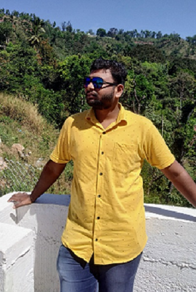

Hello, This is
Jeyaseelan
Software Developer

Hello, This is
Software Developer
------who i am-------
I am a passionate aspiring full-stack software developer with a strong enthusiasm for technology
and
its limitless possibilities. My expertise spans both front-end technologies like React and
back-end
development with Java and its frameworks, such as Spring Boot.
One of the most valuable lessons I've learned in my journey is the importance of continuous
learning. I thrive on staying up-to-date with the latest trends and technologies in the software
development field. This allows me to adapt quickly and efficiently to the ever-changing tech
landscape.
Beyond coding, I enjoy photography, hiking, and brewing the perfect cup of coffee.

----lets connect----